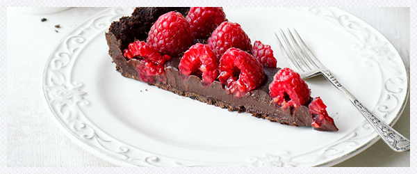

Tarta czekoladowa z malinami
Spód
- 160 g ciasteczek typu Oreo
- 160 g kruchych ciastek kakaowych*
- 100 g gorzkiej czekolady
- masło do posmarowania formy
Krem czekoladowy
- 1/4 szklanki kakao
- 1/4 szklanki cukru
- 200 ml śmietany kremówki 30%
- 100 g masła
- 200 g gorzkiej czekolady
Oraz
- 500 g malin

Przygotować formę na tartę o średnicy ok. 26 cm, najlepiej taką z wyjmowanym dnem. Posmarować ją masłem. Ciastka włożyć do melaksera lub rozdrabniacza, dodać roztopioną czekoladę i dokładnie zmiksować na pastę. Powstałą mieszanką wyłożyć spód i boki formy, uklepać i mocno docisnąć.
W rondelku wymieszać kakao, cukier i 1/4 szklanki wody. Stopniowo wlewając śmietankę mieszać aż powstanie gładka masa. Dodać pokrojone masło i zagotować co chwilę mieszając. Po zagotowaniu przelać do czystej miski i dodać połamaną na kosteczki czekoladę. Mieszać aż się rozpuści.
Masę czekoladową wylać na spód i wstawić do lodówki. Ułożyć maliny gdy masa trochę podtężeje (ok. 1/2 godziny), schładzać jeszcze ok. 2 godziny lub do czasu aż masa zesztywnieje.